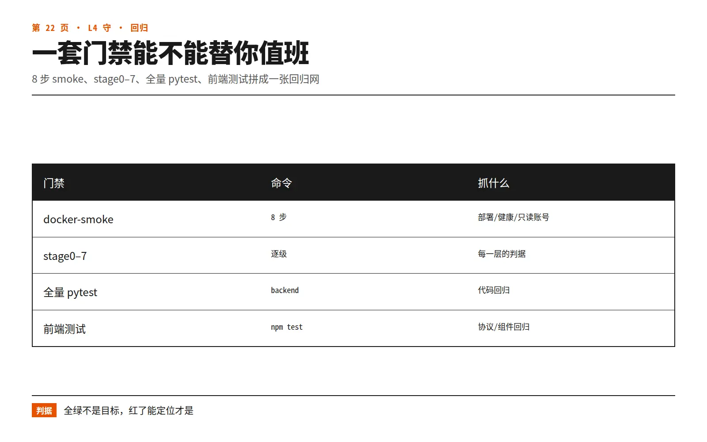
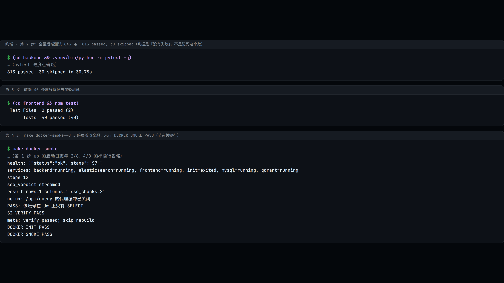
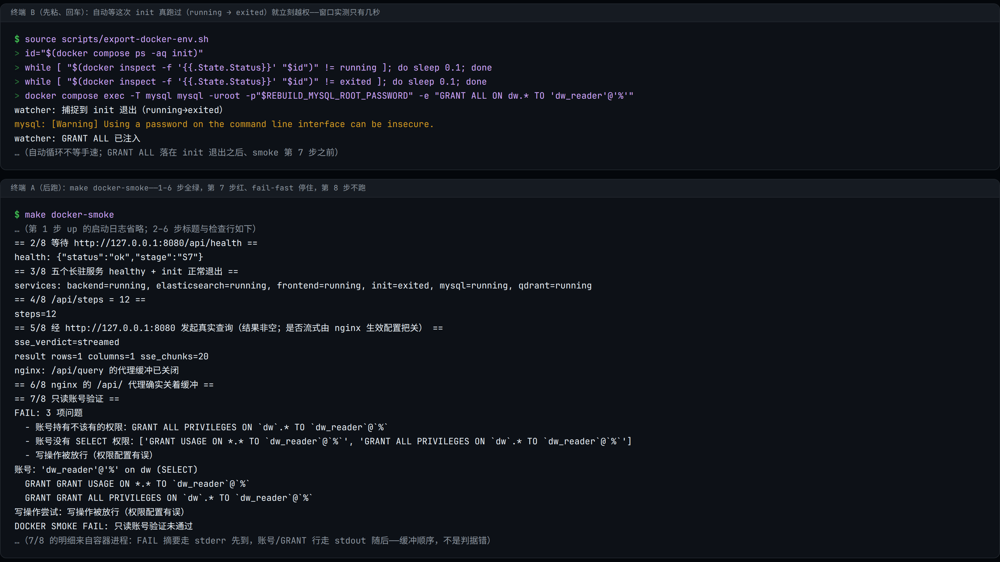

练本 · 阅读版（md 正典派生，改内容请改 manual/page-22.md）
第 22 页 · 守回归：一套门禁能不能替你值班
城市坐标 · L4 城市安防 · 应急演练｜一套门禁替你值班：测试、冒烟、越权三件事每次自动跑一遍。
前置：L4（守）第五页，也是 L4 最后一页。
前两条判据离线：
backend/.venv由第 0 页make install生成，frontend/node_modules缺了就先npm ci（要联网）。第三条要整栈：Docker 可用、
.env已由make docker-env生成、第 13 页的make docker-up起过栈。（栈停过/机器重启过就先
make docker-up或docker compose up -d，第 13 页起过 ≠ 现在还在跑。）宿主机还要有：
python3（≥3.8）与curl，smoke 预检要用。在哪敲：除级考核的终端 B 外，命令都在仓库根目录、同一个终端里整段连续执行；终端 B 也先
cd到仓库根目录，否则source找不到脚本、id为空会空等；括号是子 shell，跑完你还在仓库根目录。
这一页构建什么
回归网：把 8 步 docker-smoke、stage0–7、全量 pytest、前端测试拼成一张回归网：每个门禁各一条命令，哪条变红就指出哪一层退化。
本页只跑 4 条；要连 stage 一起跑就是 make stage7 再接 make docker-smoke。
做完你拿到：一张「每条门禁防哪类退化」的对照表，和一次亲手把网打穿、看它精确变红、再修好的级考核。
心智模型：回归网的价值不在「全绿」，在「红了能定位」。

猜一猜
- 全量后端测试共 843 条：多少条真的跑、多少条被跳过？跳过的那些，是「不需要栈」，还是「没法离线跑」？
- 把
dw_reader改成GRANT ALL，再原样跑make docker-smoke：8 步里有几步红？
动手
第 1 步：拍快照。 本页不改文件，但留一张退路（同名快照会被拒，重做本页换个名字；回显的文件数因工作区而异）：
scripts/lab save p22-before
第 2 步：全量后端测试。 843 条，本机约半分钟：
判据：末行里不能出现 failed / error，通过数可以变——「没有失败」才算过，不是记死一个数字：
(cd backend && .venv/bin/python -m pytest -q)
第 3 步：前端测试。 40 条离线协议与渲染测试，前提是第 0 页装好的 frontend/node_modules：
(cd frontend && npm test)
第 4 步：一键门禁。 前提：Docker 可用、.env 已生成、第 13 页起的栈在跑（栈停过就先 docker compose up -d 或按第 13 页重起；端口被占就先按第 13 页第 3 步改 .env）。
它会做什么：自己 up 一次（幂等；首次或镜像被清会重建，约 8 分钟），再 8 步逐条验；任何一步红都立刻停：
make docker-smoke
你应该看到
（# 开头是标注；秒数、文件数、端口、sse_chunks 随机器变。sse_verdict 可能是 streamed 也可能是 too-fast——后者同样算过，见第 13 页。）
# 第 1 步（节选：实际另有「位置」「下一步」两行回显）
已保存快照 "p22-before"：169 个文件。
# 第 2 步
813 passed, 30 skipped in 36.28s
# 第 3 步
Tests 40 passed (40)
# 第 4 步（节选：1/8 起栈日志省略；从上往下是 2/8 health、3/8 服务表、4/8 步数、5/8 真查询、6/8 nginx、7/8 只读、8/8 对账、init 幂等、通过。5/8 内部与 6/8 都会打 nginx 行，这里只留 6/8 一次）
health: {"status":"ok","stage":"S7"}
services: backend=running, elasticsearch=running, frontend=running, init=exited, mysql=running, qdrant=running
steps=12
sse_verdict=streamed
result rows=1 columns=1 sse_chunks=21
nginx: /api/query 的代理缓冲已关闭
PASS: 该账号在 dw 上只有 SELECT
S2 VERIFY PASS
meta: verify passed; skip rebuild
DOCKER INIT PASS
DOCKER SMOKE PASS


对账
- 猜 1：843 条里跑 813、跳 30。 跳的 30 条不是「不需要栈所以跳过」，相反：
- 23 条检索集成测试要真 Elasticsearch / Qdrant / 元知识（
REBUILD_INTEGRATION=1才跑）； - 5 条是生成契约对齐的已知形状问题；
- 2 条是拒答题本来就不产 SQL。
30 skipped不等于 30 个通过：没起三存储时，检索这一层今天没有验；smoke 第 8 步在同样三座存储上只对账元知识，不补这 23 条召回题。- 8 步各防什么（一步一条判据，红了就知道看哪儿）：
| 步 | 防什么 |
|---|---|
| 1/8 | 根本起不来 |
| 2/8 | nginx→backend 入口链断 |
| 3/8 | 进程在跑，但从没初始化成功（只看 running 不够） |
| 4/8 | 契约没进镜像、步骤表悄悄少一步 |
| 5/8 | 接口通，但查不出数 |
| 6/8 | SSE 被 nginx 攒成一个整包再发 |
| 7/8 | 只读只写在文档里 |
| 8/8 | 初始化结果不对、一次性脚本不可重跑 |
| - stage0–7 和 smoke 的分工。 stage0–7 是分层门禁：一条命令验一层，大多离线或只要部分服务，快、能单跑，红了直接指向那一层。 | |
| - S0–S7 各管什么：S0 契约+前端协议、S1 契约↔DDL/数据、S2 元知识、S3 检索、S4 生成、S5 策略、S6 失败矩阵+取消、S7 契约新鲜度+夹具+前端构建。 | |
| - smoke 是端到端：8 步跨层、要整栈、慢，红了指向一个步骤号。 | |
| - 一句话：stage 管「每一层自己对不对」，smoke 管「拼起来还能不能用」。 | |
- 猜 2：0 步。 先改权限再原样跑，实测 8 步全绿、DOCKER SMOKE PASS。 |
|
- 为什么是 0 步：第 1 步的 up 每次都会重跑一次性 init，而 init 每次都 DROP USER 后重建 dw_reader（第 13 页它就是这么设计的），越权被它修好了。 |
|
| - 不是没抓到：它验的是「按配置起一遍之后现在对不对」，不是「历史上有没有人改过权限」——后者要靠第 18 页那条单步判据去查。 | |
| - 它不防什么（诚实边界）。 | |
- 不防性能退化：仓库没有 S8 性能门禁（根目录 ../README.md 的 S8 性能标「待做」），系统变慢不会红。 |
|
- 不防历史越权（下一次 up 会被 init 抹掉，见下一段考试）。 |
|
- skipped 的检索测试不在离线门禁里。 |
|
| - 全绿不是目标，红了能定位才是：smoke 的步骤号 → stage 的 S 号 → pytest 的测试名，三层都能说出「哪一条判据抓到了」，下一段级考核专门验这一点。 |
你现在拥有：一张能被别人重放的值班表（8 步 smoke + stage0–7 + 843 条后端测试 + 40 条前端测试），和一句可复用的话：「门禁不是让我今天看到全绿，是让明天出事时知道该看哪一行。」
拆一刀（L4 级考核）
级考核不看页面做完没有，只看拆完你说不说得清「哪条判据抓到了、哪条没抓到」。L4 拆的是只读账号。
第 1 步：先搞清时机。 smoke 第 1 步的 up 每次都会重跑一次性 init，init 每次都重建 dw_reader——所以「先越权、再整跑」是 0 步红（猜 2 的答案）。
要让第 7 步的牙咬到：越权必须发生在 init 之后、第 7 步之前。
第 2 步：先起终端 B，粘完、回车，确认它在等，再在终端 A 跑。
前置：终端 B 也在仓库根目录，docker compose ps -a 要能看到 init 容器——栈停过/重启过就先 docker compose up -d（或按第 13 页重起）。
看不到 init 时：id 为空，B 最多空等 60 秒后报错退出（见代码块 SECONDS+60），A 照样跑——这一轮既不红也会白跑，先确认 init 可见再开 B。
窗口很短：实测只有约 3 秒（init 退出 → 第 7 步开始），靠手速会输，让循环替你等；终端 A 只有一条 make docker-smoke：
# 终端 B（仓库根目录，先启动、回车）：每轮重取 id（A 的 up 会重建 init），60 秒等不到就退出
source scripts/export-docker-env.sh
seen=0; end=$((SECONDS+60)); while [ "$SECONDS" -lt "$end" ]; do
id="$(docker compose ps -aq init 2>/dev/null)"; [ -z "$id" ] && { sleep 0.1; continue; }
s="$(docker inspect -f '{{.State.Status}}' "$id" 2>/dev/null)"; [ "$s" = running ] && seen=1
[ "$seen" = 1 ] && [ "$s" = exited ] && { echo "watcher: 捕捉到 init 退出，立刻注入 GRANT ALL"; break; }
sleep 0.1; done
[ "$seen" = 1 ] || { echo "没等到 init 跑起来（60 秒）：先确认栈已起、A 的 smoke 已开跑（docker compose ps -a），再重跑本步" >&2; exit 1; }
docker compose exec -T mysql mysql -uroot -p"$REBUILD_MYSQL_ROOT_PASSWORD" -e "GRANT ALL ON dw.* TO 'dw_reader'@'%'"
第 3 步：看 A 的输出。 1–6 步全绿（节选），第 7 步红，脚本 fail-fast 停在这里、第 8 步不跑，并打出 ps -a 与各服务日志（省略）。
若 A 8 步全绿，说明 GRANT 落晚了（已在第 7 步之后）或没注入——整次重来，别把全绿当成功（慢机器可先 docker compose exec -T mysql true 预热）：
# 1–6 步（节选）
steps=12
sse_verdict=streamed
result rows=1 columns=1 sse_chunks=22
nginx: /api/query 的代理缓冲已关闭
# 第 7 步（节选；FAIL 摘要走 stderr 先到，账号/GRANT/写操作后到 stdout——缓冲顺序，不是判据错，见第 18 页）
FAIL: 3 项问题
GRANT GRANT USAGE ON *.* TO `dw_reader`@`%`
GRANT GRANT ALL PRIVILEGES ON `dw`.* TO `dw_reader`@`%`
写操作尝试：写操作被放行（权限配置有误）
DOCKER SMOKE FAIL: 只读账号验证未通过
第 4 步：验「定位精确」。 同一个越权状态下，第 8 步的判据单独跑仍是绿的——红的只有第 7 步，不是整片红。
单独跑第 8 步判据：docker compose run --rm --no-deps init python -m app.build_meta_knowledge --verify | tail -1 → S2 VERIFY PASS。
第 5 步：还原、回 PASS。 在终端 B（已 source 过）里跑；新开的终端要先 source scripts/export-docker-env.sh，否则会红 缺少环境变量 REBUILD_DW_RO_PASSWORD。
还原命令：还原就是第 18 页那句重开账号（权限集合回到 SELECT），再整跑一次（回显节选：实际前面还有 4 行 已执行：…）：
(cd backend && .venv/bin/python -m app.scripts.security --provision-ro-account)
make docker-smoke
只读账号就绪：'dw_reader'@'%' on dw (SELECT)
PASS: 该账号在 dw 上只有 SELECT
DOCKER SMOKE PASS
答案。 网有牙（第 7 步抓住越权）、定位精确（只红第 7 步）、边界清楚（跑之前就存在的越权会被 init 修好，归第 18 页的单步判据管）。
L4 五页合起来是一句话：账号、策略、取消、观测、回归，出了事都兜得住，兜不住时也知道红在哪一层。
全书四层到此收尾：L1 造 10 页 → L2 换 4 页 → L3 审 4 页 → L4 守 5 页。